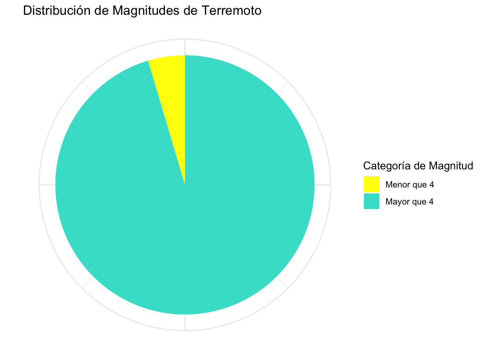

# Carga de Bibliotecas
library (tidyverse)
library(plotly)
library(DT)
library(scales)
library(palmerpenguins)
library(hrbrthemes)
library(ggthemes)
library(hrbrthemes)TAREA 2
Curso de programación ps53
TAREA DE GRÁFICOS GGPLOT Y PLOTLY
Carga de Bibliotecas
Carga Datos
data (ChickWeight)
data (infert)
data (quakes)
Gráfico de Dispersión
# Gráfico de dispersión del conjunto ChickWeight
grafico_pollitos <- ChickWeight |>
select(Time, weight, Chick) |>
ggplot(aes(x = Time, y = weight, color = as.factor(Chick))) +
geom_point() +
labs(
title = "Peso de los Pollos a Partir de su Nacimiento",
x = "Días desde el Nacimiento",
y = "Peso en Gramos",
color = "ID del Pollito"
) +
# Estilo mininal
theme_minimal()
# Gráfico plotly
Grafico_interactivo_pollos <- ggplotly (grafico_pollitos)
# Mostrar gráfico interactivo dispersión
Grafico_interactivo_pollos# Grafico_interactivo_pollos <- ggplotly(grafico_pollitos, tooltip = "text") |>
# config(locale = 'es')Gráfico 1. En este gráfico se observa el aumento de peso de los pollitos conforme van pasando los días. Donde la distribución de la media va a rondar entre 150g y 250g aproximadamente después del día 20. Hay un color asignado para cada pollito.

Gráfico de Barras
# Calcular la suma de abortos espontáneos por edad y renombrar la columna
abortos_por_edad <- infert |>
group_by(age) |>
summarise(Abortos_Espontaneos = sum(spontaneous)) |>
#Cambiamos el nombre de la columna "Age" por "Edad".
rename(Edad = age)
# Crear gráfico de barras usando ggplot2
grafico_barras <- ggplot(abortos_por_edad, aes(x = Edad, y = Abortos_Espontaneos)) +
geom_bar(stat = "identity", fill = "darkblue") +
labs(
title = "Gráfico de Barras: Abortos Espontáneos por Edad",
x = "Edad",
y = "Abortos Espontáneos"
) +
theme_economist()
# Convertir a gráfico interactivo con ggplotly
grafico_interactivo_barras <- ggplotly(grafico_barras)
# Mostrar el gráfico interactivo barras
grafico_interactivo_barrasGráfico 2. En el gráfico se observa que hay un mayor número de abortos espontáneos a los 28 y 36 años de edad.
Gráfico Pastel
# Crear categorías de magnitud de sismo
quakes <- quakes |>
mutate(mag_categoria = cut(
mag,
breaks = c(-Inf, 4, Inf),
labels = c("Menor que 4", "Mayor que 4")
))
# Calcular la frecuencia por categoría
mag_counts <- quakes |>
count(mag_categoria)
# Crear gráfico de pastel usando ggplot2
grafico_pie <- ggplot(mag_counts, aes(x = "", y = n, fill = mag_categoria)) +
geom_bar(stat = "identity", width = 1) +
coord_polar(theta = "y") +
labs(
title = "Distribución de Magnitudes de Terremoto",
x = NULL,
y = NULL,
fill = "Categoría de Magnitud"
) +
scale_fill_manual(values = c("Menor que 4" = "yellow",
"Mayor que 4" = "turquoise")) +
# Estilo minimal
theme_minimal() +
# Oculta etiquetas innecesarias
theme(axis.text.x = element_blank())
# Mostrar gráfico no interactivo pie
grafico_pie
Gráfico 3. Para este gráfico crearon dos categorías temblores. Magnitudes menores a 4 y magnitudes mayores a 4. En amarillo vemos todos los eventos menores que 4 y Turquesa mayores que 4.

Gráfico Histograma
# Crear histograma de la magnitud de los terremotos
grafico_histograma <- quakes |>
ggplot(aes(x = mag)) +
geom_histogram(binwidth = 0.3, fill = "skyblue", color = "darkblue") +
labs(
title = "Histograma de la Magnitud de los Terremotos",
x = "Magnitud",
y = "Frecuencia"
) +
# Estilo hrbrthemes
theme_stata()
# Convertir a gráfico interactivo con ggplotly
grafico_histograma_interactivo <- ggplotly(grafico_histograma)
# Mostrar el gráfico interactivo histograma
grafico_histograma_interactivoGráfico 4.La mayor frecuencia de temblores de este sitio ronda los 4.5 grados de magnitud. Hay una mejor frecuencia de temblores con magnitudes y menores a 4 y superiores a 5.
“La educación es el arma más poderosa que puedes usar para cambiar el mundo.” — Nelson Mandela
FUENTE DE IMAGENES
Imagen 1. https://images.prismic.io/turing/652ebf73fbd9a45bcec818b7_functional_programming_44edc8e7a1.webp?auto=format%2Ccompress&fit=max&w=3840
Imagen 2. https://content.nationalgeographic.com.es/medio/2023/08/18/terremoto-de-turquia_461ef0b5_230818114829_1280x720.jpg